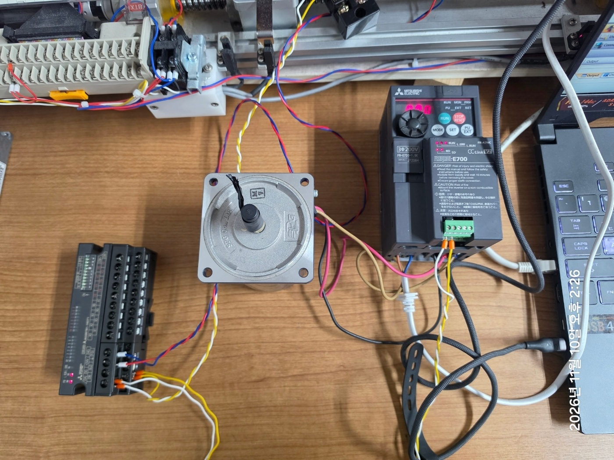
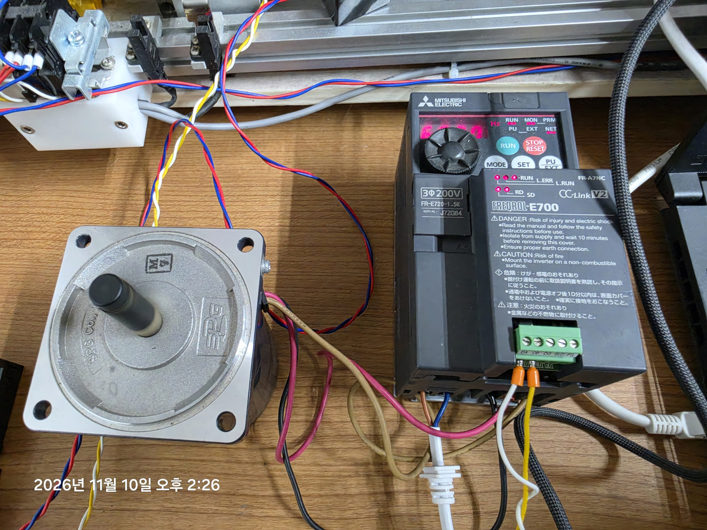
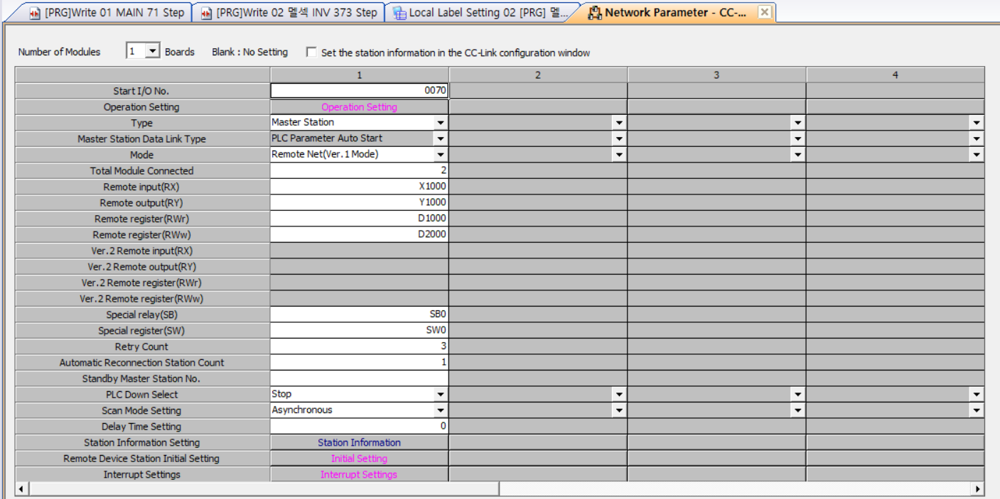
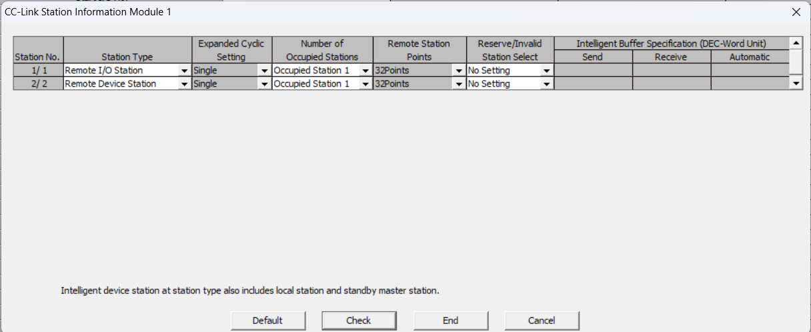

MELSEC CC-Link 통신 기반
인버터·모터 제어
MELSEC Q 시리즈 QJ61BT11N 마스터와 AJ65SBTB1-16DT1 리모트 I/O, FR-A7NC CC-Link 옵션이 장착된 FR-E720-0.1K 인버터를 연동한 개인 실습입니다. GX Works2의 CC-Link 네트워크 설정과 레더를 이용해 원격 입출력, 인버터 정·역회전, 주파수·가감속 설정 및 운전 상태 모니터링을 구현했습니다.
01. 시스템 구성
운전·설정·모니터링
GX Works2 레더
CC-Link 마스터 / 국번 0
리모트 I/O / 국번 1
리모트 디바이스 / 국번 2
CC-Link 통신망에는 리모트 I/O와 인버터가 각각 독립된 스테이션으로 참여합니다. 인버터는 리모트 I/O의 Y 출력이 아니라 CC-Link 통신으로 직접 제어합니다.


02. CC-Link와 인버터 기본 개념
CC-Link 통신
PLC와 원격 I/O·인버터가 하나의 산업용 네트워크에서 제어 명령과 상태 정보를 주기적으로 교환하는 방식입니다. 이번 실습에서는 QJ61BT11N이 마스터 역할을 합니다.
리모트 I/O와 리모트 디바이스
AJ65는 주로 ON/OFF 입출력을 처리하고, FR-A7NC가 장착된 인버터는 운전 비트와 함께 주파수·명령코드 등의 워드 데이터를 처리합니다.
RX·RY / RWr·RWw
RX는 PLC가 수신하는 비트, RY는 PLC가 송신하는 비트입니다. RWr는 수신 워드, RWw는 송신 워드입니다.
인버터의 속도 제어
인버터는 모터에 공급하는 교류 출력의 주파수·전압을 조절합니다. 주파수를 높이면 일반적으로 모터 회전속도가 증가하며, 실제 속도는 모터 극수·슬립 등에 따라 달라집니다.
이전 Modbus RTU 실습과의 차이
기존 LS 인버터 실습에서는 QJ71C24N CH2의 미리 정의된 프로토콜과 Modbus RTU 요청·응답을 사용했습니다. 이번 실습에서는 QJ61BT11N의 CC-Link 사이클릭 통신으로 비트·워드 데이터를 교환합니다.
Modbus RTU 실습 비교하기03. CC-Link 통신 설정과 주소


| 구분 | 국번 1 · AJ65 | 국번 2 · 인버터 |
|---|---|---|
| Station Type | Remote I/O Station | Remote Device Station |
| RX | X1000~X101F | X1020~X103F |
| RY | Y1000~Y101F | Y1020~Y103F |
| RWr | D1000~D1003 | D1004~D1007 |
| RWw | D2000~D2003 | D2004~D2007 |
자동 리프레시 시작 주소: RX X1000, RY Y1000, RWr D1000, RWw D2000. 실제 프로그램에서 사용한 주소와 연결해 정리했습니다.
04. 장비 사진과 통신 배선
| CC-Link | 연결 관계 | 설명 |
|---|---|---|
| DA | DA ↔ DA ↔ DA | 데이터선 |
| DB | DB ↔ DB ↔ DB | 데이터선 |
| DG | DG ↔ DG ↔ DG | 통신 기준선 |
| SLD / FG | 케이블 실드 및 규정 접지 | 차폐·접지 처리 |
| 종단저항 | 네트워크 양 끝 DA–DB | 케이블 규격에 맞게 적용 |
리모트 I/O의 X·Y는 센서·램프 등 실제 입출력 장치를 연결할 때 사용합니다. 인버터는 별도 CC-Link 스테이션이므로 X·Y 단자와 직접 연결하지 않습니다.